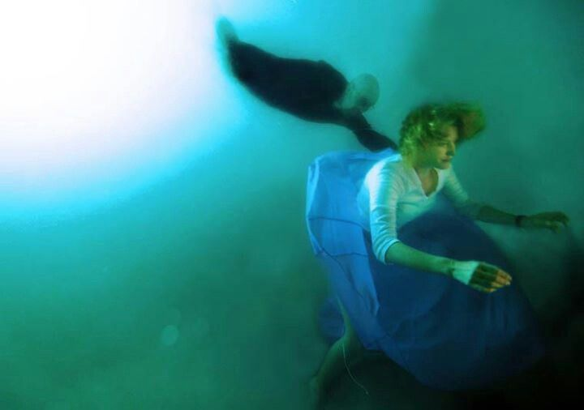

Azul é uma cor muito associada a Skyler White, o azul simboliza a lealdade e a pureza em suas intenções na vida de todas as pessoas da sua família. A medida que ela começa desconfiar de Walter, suas roupas ganham um tom azul mais escuro. A personagem usa a cor azul nas sessões de quimioterapia do marido e nos ultrassons de Holly. Mas, quanto mais Skyler começa a se envolver no esquema de Walter, mais escuras suas roupas são.
.png)
Após desconfiar de Walter, Skyler começa a se envolver com o chefe da empresa que está trabalhando, Ted Beneke, e sua paleta de cores mudam rapidamente para o roxo (cor da sexualidade pecaminosa, vaidade e etc). Em uma das suas cenas mais clássicas, onde Walter volta para casa sem o consentimento de Skyler (Quando Skyler descobre dos seus envolvimentos, ela não quer ele mais na casa), Skyler tem uma noite com Ted e diz na cara de Walter com seu vestido preto (mostrando poder).
Ainda na terceira temporada, Skyler começa a se envolver com a finança de Walter e ela passa a utilizar roupas na cor verde (representando a cor do dinheiro). Além disso, as despesas de Hank e sua recuperação fica na conta da família White, já que Skyler desconfia que Hank está lá por Walter. Na quarta temporada Skyler está dominada pela ganância e a influência de Heisenberg dentro de sua casa, sendo assim, utilizando muito as cores pretas. Skyler ajuda a lavar o dinheiro do crime de Walter White através de um lava-rápido que eles adquirem.
A quinta temporada é bem complicada para a personagem, em uma profunda depressão, Skyler decide tentar um suicidio na piscina de sua casa e mais uma vez, a psicologia das cores sendo bem utilizada. Na cena, Skyler está com uma camisa branca (representando a mesma mensagem que Walter na primeira cena da série com sua cueca branca, de um bebê impuro) e uma saia longa azul (representando seu estado de tristeza profunda naquele momento). Skyler começa a entrar na piscina e implorando pra morrer ali mesmo, mas Walter entra e a impede. O caso interessante é que o filtro da cena é azulado, até Walter entrar e esse filtro ficar com um tom verde (com a entrada de uma impureza, o azul perde seu sentido).
O interessante dessa imagem são as cores que Skyler e Walter estão utilizando e transmitem muito o que passaram e seus sentimentos. Skyler está com uma camisa verde, representando a cor do dinheiro e mostrando que está corrompida pela vida do crime de Walter, já ele está utilizando uma camisa azul, representando sua lealdade a sua esposa e mostrando sua crença que fez aquele dinheiro por ela e sua família.